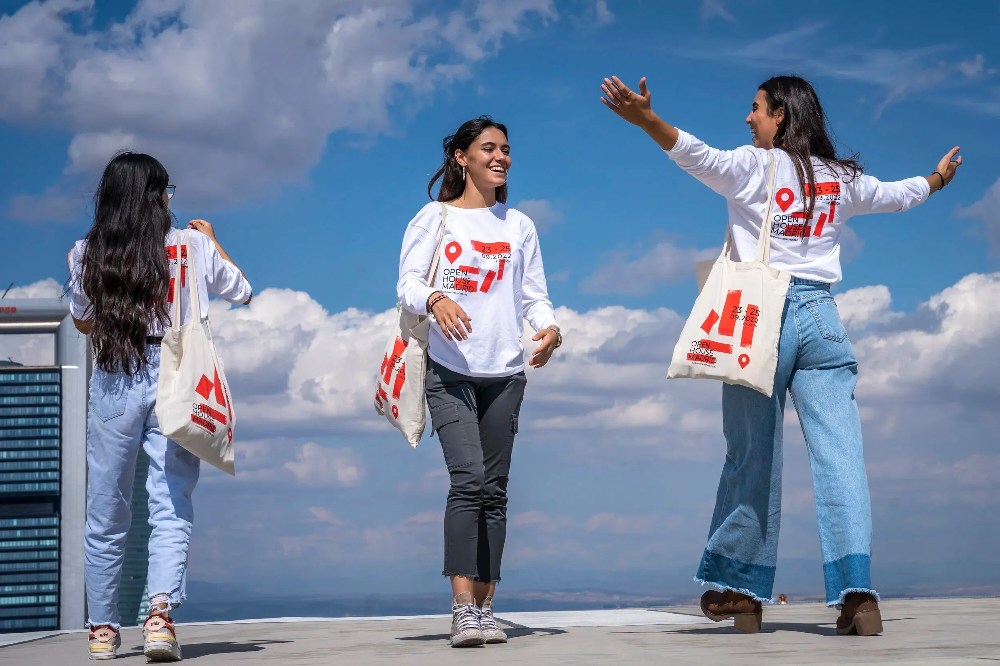
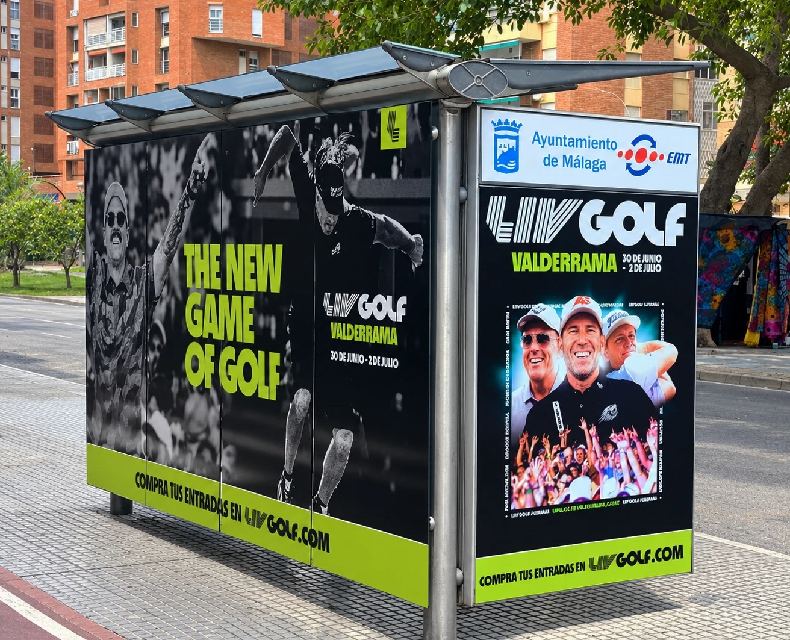
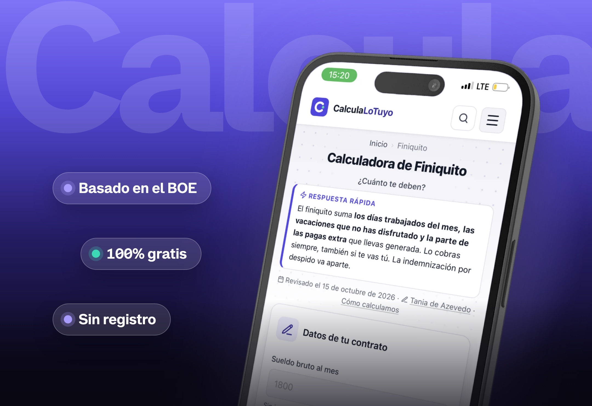

Diseño, creatividad y código.
Doy forma a marcas, campañas, webs e identidades. Del concepto visual al último detalle.
Robyn live at Primavera Sound Barcelona 2019 <3
Mi stack creativo y digital
Hola, soy Tania. Llevo más de siete años diseñando para marcas y grandes eventos: dando forma a ideas, construyendo identidades y cuidando cada punto de contacto, de la primera pieza al último detalle.
Hoy llevo esa misma mirada al entorno digital: también desarrollo webs, para que las ideas no solo tengan una imagen, sino que encuentren su lugar, funcionen y cobren vida.

Open House Madrid
Identidad de cada edición desde 2021 y rebranding del décimo aniversario: sistema modular, campañas, señalética y web.
Ver caso de estudio
LIV Golf Valderrama
Más de 200 adaptaciones de una misma campaña: de los banners a las vallas, los mupis y los vehículos rotulados.
Ver caso de estudio
Calcula lo tuyo
Calculadoras laborales y guías, diseñadas, desarrolladas y optimizadas desde cero.
Ver caso de estudioExperiencia
-
20212026
RemotoDiseñadora gráfica
ASG Marketing y Comunicación
En ASG diseño para marcas y eventos que se viven en la calle y en la pantalla. Creo identidades visuales y sistemas gráficos que se despliegan en campañas, redes, webs de eventos y piezas editoriales, y que tienen que seguir siendo reconocibles en cada formato, de un banner a una valla.
Tengo la suerte de acompañar cada proyecto de principio a fin, del primer brief al arte final, cuidando que la idea llegue intacta a cada pieza. En esta etapa he ampliado mi práctica hacia el diseño web y el desarrollo con HTML, CSS y JavaScript, porque me encanta que lo que imagino también se pueda navegar, tocar y usar.
Responsabilidades
-
20172021
BilbaoDiseñadora gráfica
Viajes Premium Explorer (ahora WeXplorer)
Viajes Premium Explorer fue mi primera experiencia como diseñadora, y un reto enorme. Era una agencia de viajes tradicional, de las de toda la vida, sumergida en una digitalización completa, y yo llegué justo cuando casi todo estaba por inventar.
Empezamos con las redes sociales, las newsletters en Mailchimp, el e-commerce de venta de viajes y hasta el merchandising para viajeros: muchas cosas a la vez, y todas por aprender. Fue la mejor escuela para entender que el diseño es lo que hace que una marca de siempre se sienta viva.
Responsabilidades
Formación
- 2026 · En curso
Desarrollo Java Full Stack Ipartek Formación
- 2018 — 2020
Márketing y Comunicación Digital IMF Business School
- 2013 — 2015
Artes Plásticas y Diseño, especializado en Ilustración Argi Arte
“Tania va siempre un paso más allá del briefing. Investiga, aporta criterio y construye marcas sólidas y bien pensadas. Ha creado proyectos desde cero y sabe afrontar encargos de gran envergadura con solvencia. Es una profesional fiable, con un estilo elegante y coherente. Un valor seguro para cualquier equipo creativo.”
¿Hablamos?
Estoy abierta a nuevas oportunidades. Escríbeme y charlamos.
taniadeazevedoribeiro@gmail.comPulsa C para copiar mi email